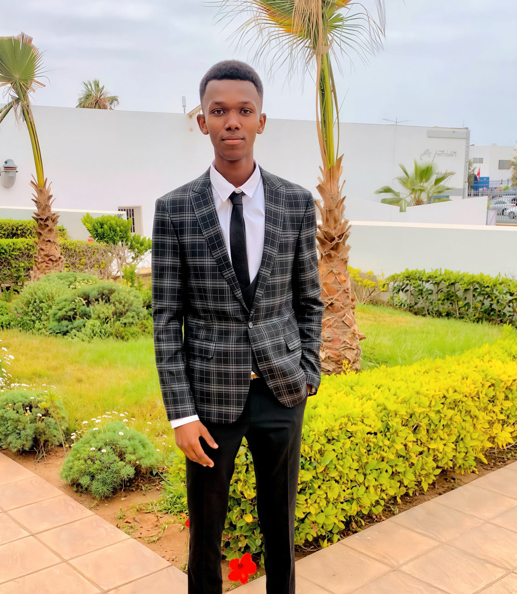
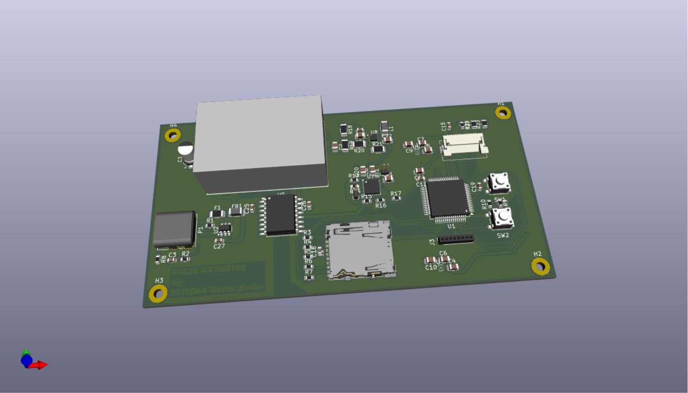
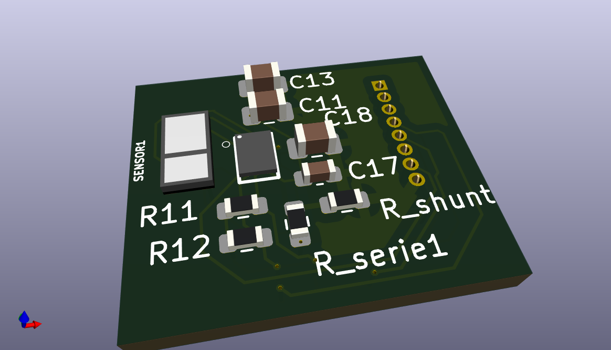
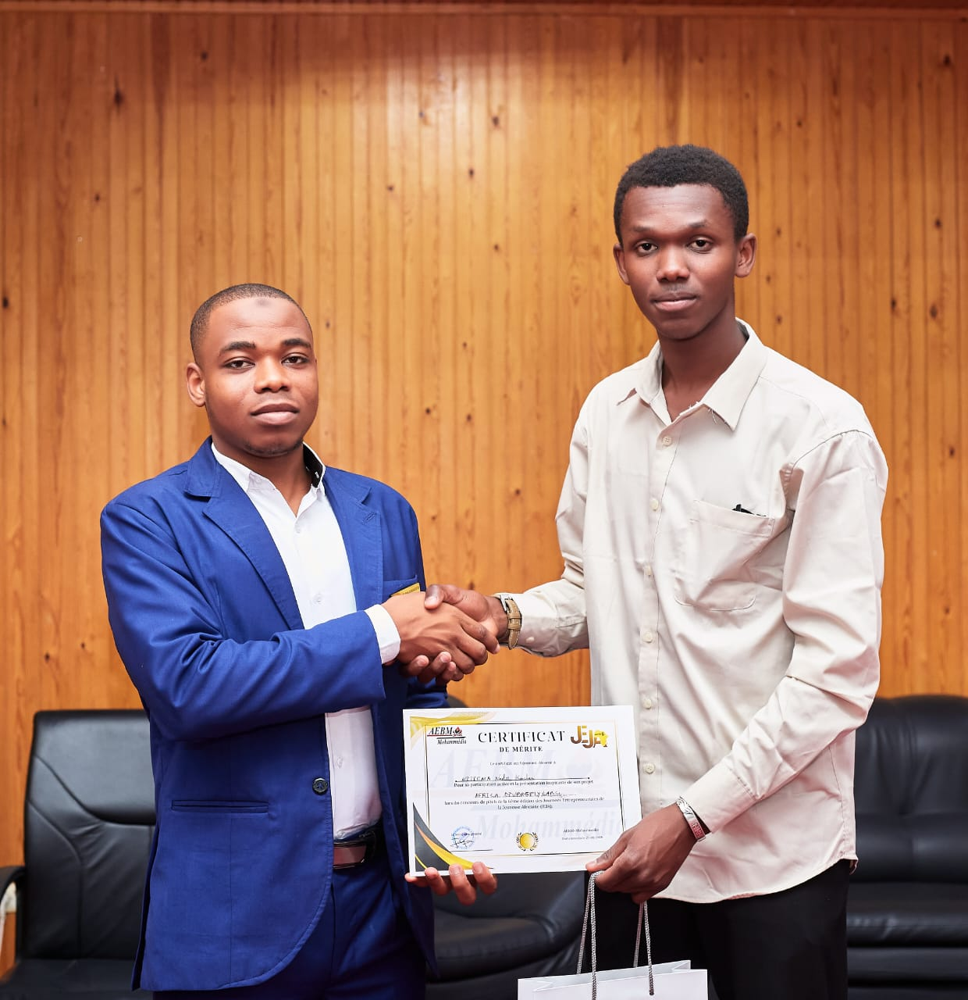
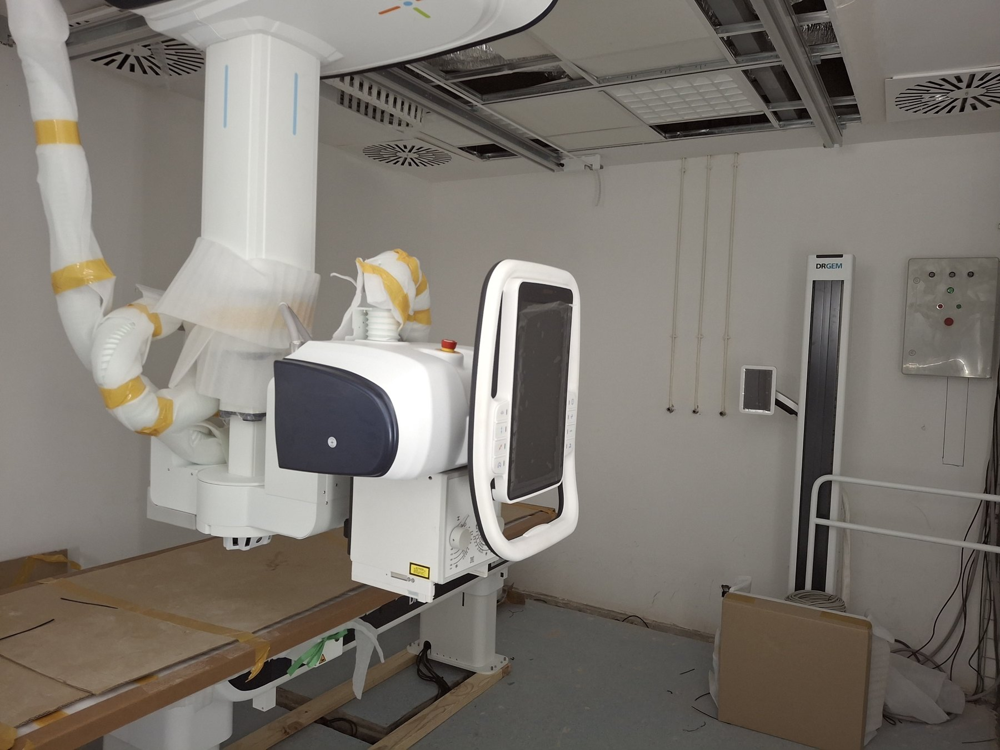
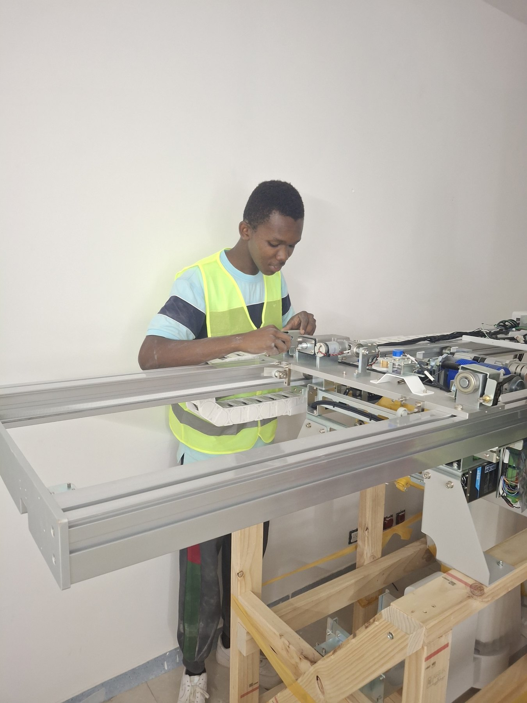

AOÛT — SEPT. 2026
STAGE TECHNIQUE · RABAT
3Gcom
Installation d’équipements de radiologie suspendus au plafond à l’Hôpital Avicenne.

GÉNIE BIOMÉDICAL · SYSTÈMES EMBARQUÉS · ENSAM RABAT
Je m’intéresse aux systèmes embarqués qui rapprochent ingénierie et santé : capteurs, instrumentation biomédicale et solutions concrètes pensées pour le terrain.
Étudiant en troisième année de génie biomédical à l’ENSAM Rabat, je m’intéresse aux dispositifs médicaux, à l’imagerie et à l’analyse de données. Ma formation en électronique et systèmes automatisés nourrit une approche concrète, de l’instrumentation au développement.
Mes stages m’ont fait découvrir les équipements de radiologie et la maintenance hospitalière. Dans mes projets, j’explore aussi bien la surveillance d’une IRM et l’ECG portable que les outils numériques de santé. J’aime apprendre, collaborer et transformer un besoin réel en piste de solution.
Des premières expériences en installations électriques aux équipements médicaux en milieu hospitalier.
STAGE TECHNIQUE · RABAT
Installation d’équipements de radiologie suspendus au plafond à l’Hôpital Avicenne.
STAGE D’OBSERVATION · SKHIRAT / RABAT
Découverte des dispositifs médicaux et des activités de maintenance hospitalière.
STAGE DE FIN D’ÉTUDES DUT · AGADIR
Amélioration et optimisation du système d’éclairage d’une trémie routière.
STAGE D’OBSERVATION · AGADIR
Conception et dimensionnement d’installations électriques sous AutoCAD.
Projets académiques et initiatives autour des dispositifs médicaux, de la santé numérique et de l’instrumentation.


DISPOSITIF MÉDICAL · SIGNAUX
Conception d’un oxymètre de pouls portable pour la surveillance continue de la saturation en oxygène. Le signal PPG mesuré sert à déterminer la saturation et le rythme cardiaque, et peut contribuer à la prédiction de la tension artérielle.
APPLICATION · GESTION DE STOCK
Application de suivi des stocks, des commandes et de la gestion des médicaments.

BIO-INFORMATIQUE · ENTREPRENEURIAT
Développement d’une plateforme de bio-informatique dans le cadre de la compétition de la Journée de l’Entrepreneuriat de la Jeunesse Africaine (JEJA).
INSTRUMENTATION · PROJET DUT
Projet de fin d’études DUT consacré à l’estimation de la durée de vie résiduelle des lampes à vapeur de sodium haute pression.


STAGE TECHNIQUE · INGÉNIERIE CLINIQUE
Participation à l’installation d’équipements de radiologie suspendus au plafond à l’Hôpital Avicenne, lors de mon stage technique chez 3Gcom à Rabat.
ENSAM Rabat — École Nationale Supérieure d’Arts et Métiers
École Supérieure de Technologie d’Agadir
Établissement Gabriel Taborin · CAP & BEP électronique (2020 — 2022)
ÉCHANGEONS AUTOUR DE LA SANTÉ ET DE LA TECHNOLOGIE